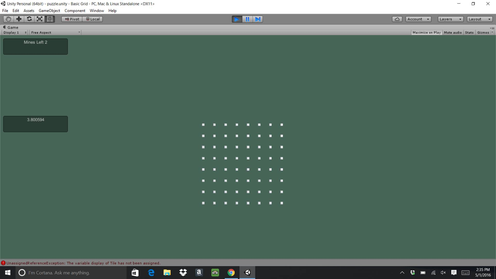

The grid was an empty object which was made into a prefab which generated the tiles within it. The grid is also where the player can control the settings of the game such as the number of tiles in the grid, the number of rows and columns, as well as the number of mines and the time limit.

The only material associated with the grid is the light green background color. The components that were included with the grid were the Transform component and the Grid script.
Tile tilePrefab -> variable representing the tile prefab
int numberOfTiles -> total number of tiles in the grid
float tileDistance -> how far apart each tile is from one another
int tilesInRow -> the number of tiles per row
int numberOfMines -> number of mines in the grid
static Tile[] tilesArray -> an Array of tiles in the grid
static Arrayist tilesWithMines ->an array list of mined tiles
static ArrayList tilesNoMines -> an array lost of tiles with no mines
static int uncoveredTile -> number of uncovered tiles
static string status -> a string representing the state of the game
static int markedMines -> number of mines that have been clicked on
static int minesLeft -> number of mines left in the grid
float timeLimit -> the set time to complete the game
float timeTaken -> the time that was spent to complete the game
void CreateTiles() -> The CreateTiles method generates tiles on the grid. It also assigns mines to random tiles.
void matchMinesToTiles() -> The matchMinesToTiles method assigns mines to tiles randomly.
void Update() -> The Update method is used to check if the number of mines left is 0 and if the number of marked mines is equal to the number of mines or if the uncovered tile count equals the number of tiles minus the number of mines. If all of those conditions are true, the the update method calls the endGame method. The update method also keeps track of the time taken to complete the game.
void Start() -> The Start method intializes all of the instance variables as well as calls the CreateTiles method.
void OnGUI() -> The OnGUI method displays the number of mines left, the time taken, and whether the game has been won or lost. The method also displays a button that allows the player to restart the game or return to the main menu. If the time taken is more than the time limit, then the game stops and returns to the main menu.
void endGame() -> The endGame method uncovers the rest of the tiles that aren't mined when the game has been won.
void restart() -> The restart method restarts the game.